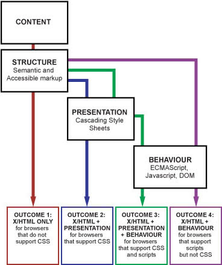

Progressive Enhancement
Robuste Websites entwickeln
Mathias Schäfer
Vortrag auf der PottJS,
Mathias Schäfer (molily)
- Software-Entwickler bei 9elements
- molily.de
- @molily on Mastodon
- @molily on Twitter
<eigenwerbung>

</eigenwerbung>
Wozu clientseitiges JavaScript?
Wie JavaScript robust einsetzen?
Das Web
- Überall & Offen
- Niedrigschwellig
- Inkonsistent & heterogen
- Anpassungsfähig
Das Web
- IP + TCP + HTTP + HTML
- Hyperlinks + URLs
Welche Rolle spielt JavaScript?
Ein historischer Überblick

Erste Gehversuche
var myForm = document.forms.myForm;
var myField = myForm.elements.myField;
if (myField.value === '') {
window.alert('Please fill out this field!');
myField.focus();
}
Welche Rolle spielt JavaScript?
- HTML & CSS sind wenig interaktiv
- Server-Roundtrips nötig
- JavaScript verbessert Web-Interaktionen
Das Layer-Modell

1. JavaScript ist Zuckerguss
- 2000: Webstandards-Bewegung
- 2002: Unobtrusive JavaScript
- 2004: Behavior Layer
2. JavaScript explodiert
- 2005: DOM Scripting, Ajax
- 2006: jQuery
- 2009: ECMAScript 5
3. Rendern auf dem Client
- 2009: HTML5 als Standard und Überbegriff
- 2011: Client-side MVC, Backbone.js
- 2012: »Single-Page Apps«
4. Rückbesinnung
- 2013: Angular, React, Ember
- 2014: Isomorphic / Universal JS
- 2016: Ember FastBoot, Angular Universal
Eigenheiten von JavaScript
- Client ist nicht unter unserer Kontrolle
- Unterschiedliche Umgebungen und Standard-Unterstützung
- JavaScript ist meist verfügbar, aber schlägt aus tausenden Gründen fehl
Fehlertoleranz
- Was HTML- und CSS-Parser nicht kennen…
fressen sie einfach. - Deklarative Sprachen & The Rule of Least Power
- Was der JavaScript-Interpreter nicht kennt…
Uncaught TypeError:
undefined is not a functionUncaught TypeError: Cannot read property 'foo' of undefined
Uncaught ReferenceError:
foo is not defined
Realismus
- Mein JavaScript hat Fehler
- Der Browser hat Fehler
- User machen Fehler
- JavaScripte spielen nicht miteinander
- Netzwerk ist unzuverlässig
»TCP implementations should follow a general principle of robustness:
be conservative in what you do, be liberal in what you accept from others.«
»Hope for the best and
prepare for the worst«
Progressive Enhancement
- Ziel: Allen Usern eine funktionsfähige Seite bieten
- Usability-Metrik: Task completion, Success rate
In einer höheren Phase der kommunistischen Gesellschaft, nachdem die knechtende Unterordnung der Individuen unter die Teilung der Arbeit, damit auch der Gegensatz geistiger und körperlicher Arbeit verschwunden ist; nachdem die Arbeit nicht nur Mittel zum Leben, sondern selbst das erste Lebensbedürfnis geworden; nachdem mit der allseitigen Entwicklung der Individuen auch ihre Produktivkräfte gewachsen und alle Springquellen des genossenschaftlichen Reichtums voller fließen – erst dann kann der enge bürgerliche Rechtshorizont ganz überschritten werden und die Gesellschaft auf ihre Fahne schreiben:
Jeder nach seinen Fähigkeiten,
jedem nach seinen Bedürfnissen!
Ungleiches ungleich behandeln
- Nach den Bedürfnissen des Users
- Nach den Fähigkeiten des Gerätes
- Fähigkeiten → Features
1. Was ist meine Kernfunktion?
Was sollen alle User tun können?
- Texte lesen
- Bilder anschauen
- Nachrichten schreiben
- Fotos hochladen
- Datensätze abfragen & eingeben
2. Erste Version
- Unbedingt notwendige Fähigkeiten
(Baseline) - Möglichst einfach und robust
- Anpassbar & performant
2. Erste Version
- Breit verfügbare Techniken
- HTML, grundlegendes CSS
- Serverseitige Logik
3. Verbesserungspotenzial
identifizieren
- User Experience verbessern
- Task completion time, User satisfaction
- Performance
- Geräte-Features nutzen
4. Verbesserte Version
- JavaScript-Interaktivität
- Feature Testing, z.B. Modernizr
- Asking “if” a lot
- Komplexe JavaScript-APIs
5. Progressive Enhancement
GOTO 3.
To Infinity… and Beyond!
Vorteile
- Geringe Einstiegshürde
- Einfache Version für alte Browser
- Neueste Browserfeatures sicher nutzen
- Beliebig hoch bauen
- Move fast, break nothing!
Beispiele
Offene Fragen
-
Was ist der Wert der einfachsten Version?
- Solide Basis, nicht konkurrenzfähig
- Funktioniert auf jedem Gerät
- Zugänglichkeit > Features
- Explizite vs. implizite Annahmen?
Offene Fragen
-
Aufbauen auf den einfacheren Versionen?
- Bis zu einem bestimmten Punkt ja
- Dann einen Schnitt machen
-
Wiederholung? X-fache Arbeit?
- Im Grunde ja
- Strategie: Universal JavaScript
Offene Fragen
- Fragmentierung? Hunderte User-Journeys?
-
Automatischer Fallback auf die einfachere Version?
- Leider nein
- “Atomic enhancements”
- Transaktionen
Modularisierung
»A fault-tolerant design enables a system to continue its intended operation, possibly at a reduced level, rather than failing completely, when some part of the system fails.«